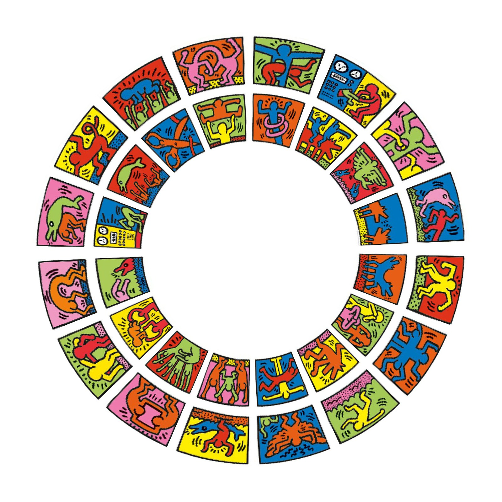

library(circlize)
load(system.file("extdata", "doodle.RData", package = "circlize"))
circos.par("cell.padding" = c(0, 0, 0, 0))
circos.initialize(letters[1:16], xlim = c(0, 1))
circos.track(ylim = c(0, 1), panel.fun = function(x, y) {
img = img_list[[CELL_META$sector.numeric.index]]
circos.raster(img, CELL_META$xcenter, CELL_META$ycenter,
width = CELL_META$xrange, height = CELL_META$yrange,
facing = "bending.inside", scaling = 0.5)
}, track.height = 0.25, bg.border = NA)
circos.track(ylim = c(0, 1), panel.fun = function(x, y) {
img = img_list[[CELL_META$sector.numeric.index + 16]]
circos.raster(img, CELL_META$xcenter, CELL_META$ycenter,
width = CELL_META$xrange, height = CELL_META$yrange,
facing = "bending.inside", scaling = 0.5)
}, track.height = 0.25, bg.border = NA)
circos.clear()